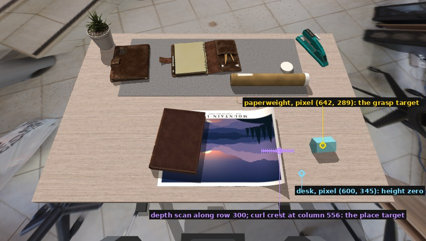

dashboard · where the work stands ·
this task's skill-route trials · generated 2026-11-25 17:06 EST by
s2/outputs/direct_s0_1c/build_unit_study.py
One in-house task, driven through the tracking policy (S0) with a single skill. A development experiment of 2026-11-25: every episode is listed, none is a counted trial. 中文摘要见下方答案框。
Result. The task, put the paperweight on the poster so it stops rolling back up, was solved with one skill. acquire (the tracking policy's own grasp) picked the paperweight up. Everything after the grasp was written by S2 itself as plain geometry read off the head-camera picture: a 0.20 m carry that puts the held object, not the palm, over the poster's curled end; a 2.5 cm lowering; opening the hand; withdrawing; waiting. The task's own rule says PASS at 15.4 s of a 30 s budget (episode 4). The identical program was then run two more times: 3 of 3 executions PASS (at 15.4 s, 15.5 s, 15.4 s). No fallback skill was used, no part of the robot ever touched the poster, and the paperweight's own weight is what holds the edge flat.
So is the skill interface needed? Not the large skills: carry, set down and release were replaced by four segments S2 wrote by hand, on a task the skill route has not passed yet (section 6). But S2 could not have done it with nothing underneath. Three things were indispensable. (1) The grasp skill: S0 follows a recorded hand-and-object clip, the policy can be bound to a clip only inside acquire, and S2 cannot write twenty finger joints by hand. (2) The motion planner: S2 wrote waypoints; the planner turned them into 195 joint rows the arm can solve, checked against the depth picture, and it refused S2's first two attempts before anything moved (an opening shorter than the hand needs; a goal the arm cannot reach). (3) The measuring tools: a pixel to a point in space, and where the object sits in the hand (9.4 cm from the palm origin).
What it cost and how far it reaches. Getting there took four episodes: two stopped by the planner, one that reached the end state and closed the episode too early. S2 also misjudged where the held object's underside is by about 2.8 cm (one camera cannot see under the hand): in three of the four executions the held block met the curl 0.2 s before the hand opened. Harmless on paper, not on a hard surface. One task, one start, one object. The author had read this task's rule earlier in this thread, so this is a development result and is in no success rate.
中文摘要。只用一个技能就完成了 t27（把镇纸放到卷起的海报上，让它不再卷回去）：抓取用 acquire（跟踪策略 S0 自己的抓取）；抓取之后的全部动作（平移 0.20 m、下降 2.5 cm、张手、撤手、等待）都由 S2 根据头部相机图像直接写成几何路点，经运动规划器执行；任务自带的判据判定 PASS（15.4 s，预算 30 s）。结论：搬运、放下、释放这类“大技能”在这个任务上不是必需的；但 S2 也不能绕开下面三样东西直接驱动 S0：（1）抓取技能：S0 跟踪的是录制的手-物参考片段，只能在 acquire 内绑定；（2）运动规划器：把 S2 写的几个路点变成机械臂可解、对深度图做过碰撞检查的关节轨迹，它在机器人动之前拒绝了 S2 最初的两次错误尝试；（3）测量工具：像素到空间点、物体在手中的位置。局限：只有一个任务、一个起始状态、一个物体；S2 对手中物体底面高度的估计偏了约 2.8 cm；作者此前读过该任务的判据，所以这是开发性实验，不计入任何成功率。
Today S2 (a language model that sees the robot's head camera) composes skills; each skill plans one motion, executes it and checks itself. Under the skills the tracking policy S0 drives the fingers along a recorded reference clip while the arm servo follows the wrist rows. The owner's question: is the skill layer needed, or could S2 generate the trajectory itself? This study takes one of the 50 in-house tasks and gives S2 as little as possible: one skill for the grasp (since 16:22 today the trial rules say the same: taking hold of a thing is the tracking policy's job), and for everything else only the planner (plan_motion, execute_plan) and the measuring tools.
| part of the motion | skill route (how the 50-task trials are played) | this study |
|---|---|---|
| Choosing the targets | S2, from numbered objects and vision tools | S2: two pixels read off the head-camera picture, turned into points with point_at |
| Grasp: bind the tracking policy to a clip, follow the clip's wrist path, lift | skill acquire | the same skill acquire: there is no other way to bind S0, and no way for S2 to write a finger reference |
| Carry to the place | skill transport (a free, collision-avoiding move to a hover over the target) | S2: one straight palm translation, shifted by where the object sits in the hand, so that the object ends over the curl |
| Lower | skill set_down (a slow guarded descent until the arm feels contact) | S2: a fixed lowering of 2.5 cm from its own estimate of the clearance, no guard |
| Let go | skill release_in_place or place_release | S2: one hand command (flexion_then_splay) on a 60-tick stay |
| Withdraw | skill retreat or clear_view | S2: straight up 15 cm, then a 6 s stay |
| Waypoints into joint rows the arm can solve; collision check against the depth picture with the held object attached; speed limits; hand timing | the planner, called inside each skill | the same planner, called by S2's program |
| Checking each step | each skill checks itself (held, landed, touch) and S2 looks between skills | nothing between the steps: one plan, executed without a look; S2 looked before, the judge after |
amber in the films = a skill is executing · violet = palm rows written by S2 are executing · grey = nothing executing (planning time charged as hold ticks, settle time).

The first head-camera picture of the episode (848 x 480), the one view S2 has, with the pixels S2 chose drawn on it afterwards. Yellow: the paperweight. Violet: the row along which S2 asked for depth across the poster's free end. Blue: a point on the bare desk.
S2 chose pixels, not coordinates. point_at turned each pixel into a point in space from the depth image. Along the violet row the sheet climbs steadily to 47 mm above the desk and then falls to the desk: that is the curled end, and its highest column became the place target. The perceived object nearest the paperweight's point (1.6 cm from it) was handed to acquire. After the grasp, estimate_in_hand gave where the block sits in the hand, and S2 shifted its carry by that offset.
| pixel column (row 300) | height above the desk, mm | depth spread in the patch, mm |
|---|---|---|
| 520 | 5.3 | 5.8 |
| 524 | 7.9 | 6.3 |
| 528 | 11.0 | 6.7 |
| 532 | 14.7 | 7.2 |
| 536 | 18.9 | 7.7 |
| 540 | 23.6 | 8.2 |
| 544 | 29.0 | 8.7 |
| 548 | 35.1 | 9.3 |
| 552 | 41.9 | 9.9 |
| 556 | 46.7 | 57.3 |
| 560 | 0.0 | 3.7 |
| 564 | 0.0 | 3.7 |
| 568 | 0.0 | 3.7 |
| 572 | 0.0 | 3.7 |
| 576 | 0.0 | 3.7 |
| 580 | 0.0 | 3.7 |
| 584 | 0.0 | 3.7 |
The curl as the depth image shows it (episode 4). The last raised column lies on the sheet's edge: the depth inside its patch spreads over 57 mm, so the height there is a mix of sheet and desk. The simulator's record puts the edge 51 mm above where it lies when flat.
The robot's head camera, drawn from the flight record after the session: the one view S2 has. Bottom left, the host's third-person film, which S2 never sees. The bar on top says who wrote the motion on each tick (amber: the skill acquire; violet: rows S2 wrote; grey: nothing executing); the bottom bar shows when the tracking policy drives the fingers and which hand command is in force. Real time, 19 s.
The same program one segment shorter: it ends right after the withdrawal. Every term of the rule is true at the last tick, but they have been true together for 0.62 s only. In this execution the held block touches the curl just before the hand opens. Real time, 13 s.
| # | what S2 wrote | what happened (from the program's report, the record and the rule) | ticks | rule |
|---|---|---|---|---|
| 1 | acquire, then a carry + descent + opening written as raw segments; the place target chosen by a size rule, no picture read direct_place_t27.py (first version) · run 20261125T212519Z-37ffc3ce | The skill acquire grasped and lifted the paperweight in 313 planned rows. The authored place was refused before anything moved: invalid_request. A second authored place (free descent) was refused before anything moved: invalid_request. The skill retreat then raised the hand, still holding the paperweight. Record: the paperweight was still in the hand at the last tick; it was never put down. | 567 | FAIL |
| 2 | the same, with the opening given the 60 ticks the hand needs; target still chosen by a shape rule (largest flat thing) direct_place_t27.py (opening time fixed) · run 20261125T213240Z-03b86749 | The skill acquire grasped and lifted the paperweight in 313 planned rows. The authored place was refused before anything moved: ik_unreachable. The skill retreat then raised the hand, still holding the paperweight. Record: the paperweight was still in the hand at the last tick; it was never put down. | 556 | FAIL |
| 3 | S2 reads the head-camera picture, measures the paperweight and the poster's curled end with point_at, then writes carry + lower + open + withdraw direct_s2_t27.py · run 20261125T214133Z-5ea1e4e8 | The skill acquire grasped and lifted the paperweight (thumb opposed) in 313 planned rows. The authored carry + lower + open, planned in one piece, was accepted by the planner (195 rows, collision-checked, least clearance 13 mm by the planner's own estimate). It executed in 195 ticks. The authored withdrawal executed. Fallback skills used: none. Record: the paperweight ended at rest on the sheet, 16.6 cm from where it started, with no hand contact. All 9 terms of the task's rule were true at the last tick and had been true together for 31 ticks (0.6 s); the rule asks for 150 (3.0 s). | 652 | FAIL |
| 4 | the program of episode 3 unchanged, plus one segment: a 6 s stay after the withdrawal (the live loop gives every session such a settle time after close; a program-mode run has none) direct_s2_t27_tail.py · run 20261125T215512Z-199c2061 | The skill acquire grasped and lifted the paperweight (thumb opposed) in 313 planned rows. The authored carry + lower + open, planned in one piece, was accepted by the planner (195 rows, collision-checked, least clearance 14 mm by the planner's own estimate). It executed in 195 ticks. The authored withdrawal executed. Fallback skills used: none. Record: the paperweight ended at rest on the sheet, 15.4 cm from where it started, with no hand contact. All 9 terms of the task's rule were true at the last tick and had been true together for 331 ticks (6.6 s); the rule asks for 150 (3.0 s). | 949 | PASS |
| 5 | the program of episode 4 again, unchanged direct_s2_t27_tail.py (repeat) · run 20261125T215852Z-86e2d6d7 | The skill acquire grasped and lifted the paperweight (thumb opposed) in 313 planned rows. The authored carry + lower + open, planned in one piece, was accepted by the planner (195 rows, collision-checked, least clearance 13 mm by the planner's own estimate). It executed in 195 ticks. The authored withdrawal executed. Fallback skills used: none. Record: the paperweight ended at rest on the sheet, 16.6 cm from where it started, with no hand contact. All 9 terms of the task's rule were true at the last tick and had been true together for 331 ticks (6.6 s); the rule asks for 150 (3.0 s). | 954 | PASS |
| 6 | the program of episode 4 again, unchanged direct_s2_t27_tail.py (repeat) · run 20261125T220116Z-d3281ca0 | The skill acquire grasped and lifted the paperweight (thumb opposed) in 313 planned rows. The authored carry + lower + open, planned in one piece, was accepted by the planner (195 rows, collision-checked, least clearance 13 mm by the planner's own estimate). It executed in 195 ticks. The authored withdrawal executed. Fallback skills used: none. Record: the paperweight ended at rest on the sheet, 16.3 cm from where it started, with no hand contact. All 9 terms of the task's rule were true at the last tick and had been true together for 331 ticks (6.6 s); the rule asks for 150 (3.0 s). | 951 | PASS |
Episodes 1 and 2 are kept for what stopped them: in both the planner refused S2's motion before anything moved, which is that layer doing its work. Their place target was wrong as well (a rule over perceived sizes picked another object than the poster), which is why from episode 3 on S2 reads the picture. Verdicts were read by the author after each session had exited: a developer's reading. Players of the 50-task series see one status word.
Read after the session had exited, from the simulator's record and not from what any skill said of itself. Four things are checked before a pass is believed: the object stayed in the hand until the commanded release; the arm followed its reference; the graded state was produced in the phase that should produce it; every term of the rule was measured, on the task's own object.
| tick | what the record shows |
|---|---|
| 0 0.0 s | the skill acquire starts: the tracking policy is bound to the clip and the arm reaches along rows the skill planned from the clip's wrist path |
| 277 5.6 s | first contact of the hand with the paperweight |
| 369 7.4 s | highest point of the lift: 10.6 cm above where the paperweight lay, clear of every support |
| 372 7.5 s | S2's own plan starts: carry, lower, open the hand |
| 496 9.9 s | the hand opens on S2's hand command; the hand's last contact with the paperweight is at tick 496 |
| 499 10.0 s | the falling paperweight lands on the curled end of the sheet |
| 504 10.1 s | the free edge of the poster is flat on the desk, and stays flat to the end |
| 512 10.3 s | the paperweight is at rest, and stays at rest |
| 586 11.7 s | S2's own withdrawal starts: straight up, then the settle wait |
| 618 12.4 s | the palm is 0.18 m from the paperweight: the last of the nine terms to become true |
| 767 15.4 s | the rule is satisfied: all nine terms have been true together for 150 ticks (3.0 s) |
| 948 19.0 s | last tick of the record; all terms true together for the last 331 ticks (6.6 s) |
| check | result |
|---|---|
| Any robot body touching any body of the poster (MuJoCo collision detection on all 949 recorded states, 34 robot bodies, wrist flange and forearm included) | never (0 ticks) |
| Robot touching the paperweight | ticks 277..496 (219 ticks) |
| Paperweight touching the poster | ticks 499..948 (449 ticks) |
| Palm tracking error over the episode | median 0.09 mm, 95th percentile 1.4 mm, largest 2.2 mm; inverse-kinematics recovery on 0 % of ticks |
| Paperweight lifted clear of every support | 3.6 s without support contact, greatest rise 10.6 cm |
| Replayed kinematics against the record (palm) | 0.0 m largest difference; scene file is the episode's own: True |
| term of the task's rule | at the last tick | true without interruption from tick |
|---|---|---|
| free edge of the poster lower than 0.003 m above the desk | true | 504 |
| free edge within 0.010 m of where it lies when the sheet is flat | true | 500 |
| the paperweight touches the last strip of the curling end | true | 503 |
| the paperweight is at rest (0.02 m/s, 0.5 rad/s) | true | 512 |
| no hand link and no palm surface touches the paperweight | true | 498 |
| no hand link touches the poster | true | 0 |
| right palm at least 0.18 m from the paperweight | true | 618 |
| the paperweight lies at the end of the sheet | true | 436 |
| the paperweight has been lifted in the hand (0.070 m above the desk, two links of one hand on it) | true | 315 |
The third column is the tick from which a term stays true to the last tick. The scorer's per-term count of true ticks is a total over the episode, not a streak, and is not used here.
The 50-task series plays this task through the skills: acquire, then transport, set_down, release_in_place, and whatever recovery the player chooses. Four trials are on record (2026-11-25, session agents, earlier versions of the skill code): all four FAIL, with 6 to 12 acting turns and 841 to 1,500 ticks each. The skill fixer's reading of those records (16:55 today) is that the skills did aim the object (its middle ends 2 to 3.6 mm from the target in the plans) and that the misses of 2 to 12 cm came from the block leaving the policy's grip in the middle of set_down's guarded descent; its own proof session on this task after the fix ended the same way ("held no, dropped_during_descent, block 12 cm from the target"). The directly written version has no guarded descent: a carry at fixed height, a lowering of 2.5 cm in about 0.3 s, then the opening. In all 4 executions of S2's trajectory the block was in the hand until the commanded release, and no robot body touched the poster. This is not a controlled comparison: other players, earlier code, and they did not know what the author of this study knew.
For comparison: trial 3 of the skill route on the same task (a session agent, 2026-11-25, FAIL), from the task's own trial page. That film uses the trial pages' own phase colours.
estimate_in_hand and shifted the carry by it; the paperweight came to rest on the last strip of the curl in all four executions.acquire, and what S0 follows during a grasp is a recorded clip: object motion, wrist path, twenty finger joints. There is nothing there S2 could write by hand.plan_motion. In episodes 1 and 2 this layer refused S2's motion before anything moved; without it those motions would have gone to the robot.point_at, locate_objects, propose_grasps (what can be grasped, with which clip), estimate_in_hand (where the object sits in the hand, and afterwards that the hand is empty).Before the study, this thread put the harness under regression: it ran every test suite of the repository once as a baseline on the code state the skill campaign was frozen at (fix7, 2026-11-25 14:22), and added a folder of 27 tests that pin the rules the campaign's numbers rest on. The new tests live outside the harness package, so adding them could not void a probe unit in flight; the campaign coordinator asked for each of the six groups.
| suite | baseline, fix7 freeze (15:02-15:18 EST) | after fix8 froze (16:56-17:04 EST) | note |
|---|---|---|---|
s2/dexharness/cap/tests | 2707 passed, 16 skipped, 0 failed (8 min 15 s) | 2733 passed, 16 skipped, 0 failed (7 min 12 s); +26 tests added by fix8 | the harness and skill layer. The 16 skips need the co-simulation and GPU, or a sandbox network namespace this machine does not give. |
s2/dexharness/scoring/tests | 51 passed | 51 passed | the judge: record loader, measures, rule files. |
s2/s2loop/tests (new) | 27 passed (1.5 s) | 27 passed (1.7 s) | the regression folder below. |
s2/benchmark/InHouse/tools/d50/tests | 32 of 33 scripts passed; 246 tests passed, 1 failed | not re-run (outside the harness) | outside the harness: the failure is one resting pose of the screw object (lying_roll_2) in the object-rig test. Not re-run. |
pixi run test (repository root) | 480 passed, 4 failed | not re-run (outside the harness) | outside the harness: the tracking-policy training code. Not re-run. See the note under the table. |
s2/s2loop/tests/| file | what it pins |
|---|---|
test_1c_trials_page.py | the three success rates of the trials page are counted apart and correctly from the trial records: first attempt, after practice, held-out; a FAIL or NOT_EVALUABLE trial is an attempt; a task with only void episodes is not; the held-out list is read from the protocol's own line |
test_1c_tripwires.py | read-only over the real tree: no held-out task has a trial record, and the 50 frozen task folders still match the sha256 list written when the benchmark was frozen |
test_1c_s2_text_lint.py | what a trial player reads (capability card, cross-task experience, library) contains no sentence and no internal name copied from any of the 50 rule files, no path into the benchmark folder; the prior rows carry a closed state and an integer n when measured |
test_1c_status_word.py | the players' judge command prints exactly one word (the status), also when the judge refuses, and the judge's output keeps the key the command reads |
test_1c_slots.py | the simulator slot pool at the campaign's own size (7 slots, 10 GB memory floor), built from a temporary config: an eighth session waits and takes the freed slot; the memory floor and the reserve for sessions that just started are enforced |
test_1c_measures.py | the corrections the film check forced, on synthetic records: an object tilted against the table on every tick and one clear of it for 0.14 s are not 'carried'; a carry of more than a second is; the hold clock starts at the hand command; a release reports its 3-D displacement and the height of the object's lowest point |
conftest.py | thread limits, and a guard that fails the run if a test's line ever reaches the campaign's real ledger |
The four failures of the repository's own test command are outside the harness and were there before this thread: two are tests of a fixed list that newer work has outgrown (one extra recipe file, auto2_video.recipe.json; extra registered task variants WujiHand_CFPM_AUTO2_*), one needs a data file that is not on this machine (data/DataSet/tracks/wh2/cube/.../mesh_med.stl), and one is an assertion that fails on its own terms (test_zero_dt_compute_advances_only_newly_reset_environments expects reference steps (3, 1, 5)) and deserves a look by the training code's owner.
Files of this study: s2/outputs/direct_s0_1c/ (programs, run folders, episodes.json, the checkers
joint_streak.py, contact_replay.py, read_mechanism.py, the film annotator). Nothing of it is in the campaign's ledger.